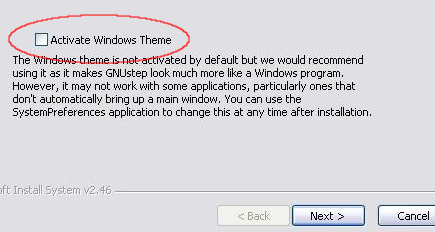

First remove any previous version and the related GNUstep packages, if any.
You need donwload the following packages:
Now install the packages in the order that these are listed. Active the theme WinUXTheme when install the Core package, see image below:

You don't need change other options. After install all, you can launch the app from Start -> Applications -> FisicaLab -> FisicaLab.
If you miss activate the theme at installation, run the Shell at Start -> Applications -> GNUstep -> Shell and write:
defaults write NSGlobalDomain GSTheme WinUXTheme
and hit RETURN.
| NOTES |
| On Windows systems you can't write the character @, needed to use conversion factors, with the combination Alt-64. You need write this character with the key Alt or Shift in combination with another alfanumeric key. |